地政学
ドドマはインド洋岸から離れた中央高原に置かれ、国土の統合を象徴します。ダルエスサラームの経済力と並び、議会、官庁、党政治、地方代表を内陸へ集め、全国の距離を測り直す首都です。移転の意味も残ります。
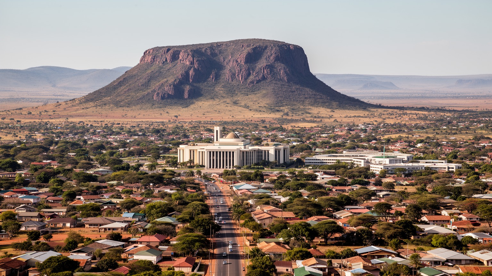
🇹🇿 タンザニア / 首都ドドマ / World City Atlas
中央高原の乾いた土地に置かれたタンザニアの政治首都です。国会、政府移転、大学、鉄道と道路、ワイン産地、スワヒリ語圏の市場、宗教生活が、旧商都ダルエスサラームとは違う国家像を作ります。
内陸高原の首都
ドドマは港湾大都市ではなく、鉄道と幹線道路が通る中央高原の政治首都です。首都移転の理念、政府機能の段階的な移動、乾燥地の生活、大学と市場が、国土の重心を静かに変えています。
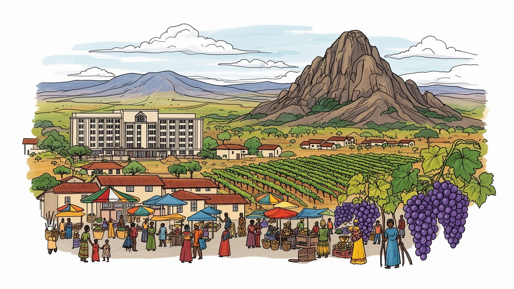
ドドマはインド洋岸から離れた中央高原に置かれ、国土の統合を象徴します。ダルエスサラームの経済力と並び、議会、官庁、党政治、地方代表を内陸へ集め、全国の距離を測り直す首都です。移転の意味も残ります。
行政、建設、教育、小売、交通、農産物流通、葡萄栽培とワイン関連が雇用を支えます。政府移転は住宅とサービス需要を押し上げますが、露店、バイクタクシー、若者の仕事、乾燥地農業の不安も市場に残り続けます。
ゴゴ人の土地に、全国から来た公務員、学生、商人が暮らします。スワヒリ語、地域語、教会、モスク、祭礼、市場、食、音楽、サッカー、ラジオ、家族の送金が重なり、地方都市の近さを保ちます。祈りもあります。
住民は乾季の水、暑さ、通勤、住宅地の拡大、学校、医療、市場価格と向き合います。旅人は国会周辺、ジャムフリ広場、大学、岩山、葡萄畑、郊外の村を通じて、政治首都の地味な力を知ります。日常こそ見所です。
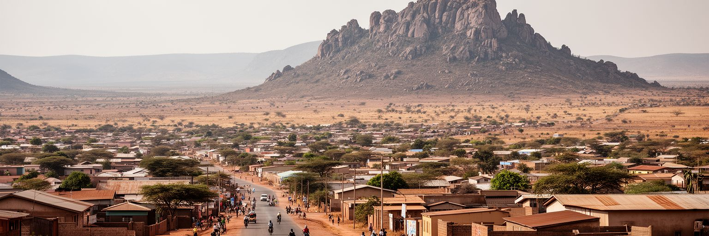
ドドマを理解する入口は、タンザニアの最大都市ではなく、国土の中央へ政治の重心を移すために選ばれた首都であることです。インド洋に面したダルエスサラームは港湾、商業、金融、外交の大きな力を持ち続けますが、ドドマは内陸高原で国会、政党、行政、大学、道路交通を受け止めます。周囲には乾いた草地、岩山、低い住宅地、畑、葡萄畑が広がり、都市の輪郭は海岸都市の湿った密度とは異なります。半乾燥の気候は、雨季と乾季、水の確保、街路樹、日陰、土ぼこりを生活の重要な条件にします。市域は広く、中心部、政府地区、大学、周辺集落が距離を置いて並ぶため、首都機能を集めるだけでは都市の一体感は生まれません。道路、公共交通、学校、診療、水道をどう結ぶかが、国家の象徴と日常をつなぎます。ドドマの景観は派手ではありませんが、中央高原の地理そのものが、国家を海岸から内陸へ広げる政治的なメッセージを持っています。中心に首都を置く発想は、遠い地方にも国家が目を向けるという約束を含みます。その約束が住民に届くかどうかは、会議場の計画ではなく、朝の通勤、学校までの道、乾季の水くみ、病院への移動の中で確かめられます。地形を読むと、首都は完成した記念物ではなく、国の中心をどこに感じるかを日々作り直す場所だと分かります。ここに静かな重要性があります。
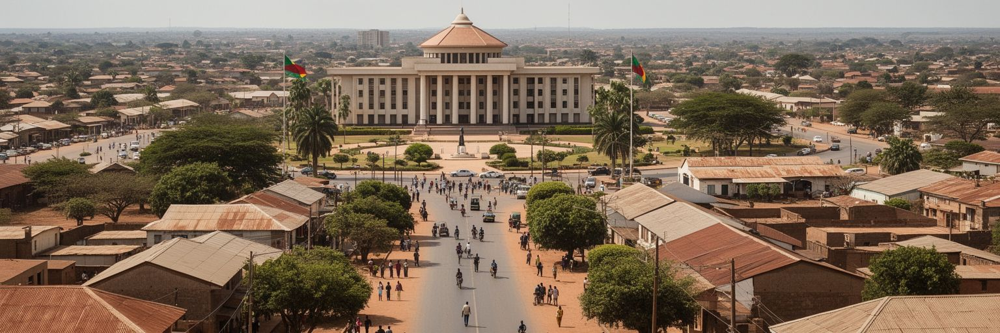
ドドマの首都移転は、一九七〇年代のタンザニアが掲げた国家建設の理念と深く結びついています。国土の中心に政治機能を置くことで、海岸部への過度な集中を和らげ、内陸地域の発展を促し、ウジャマーの農村社会に近い首都を作る構想が語られました。しかし首都は宣言だけで動くものではありません。省庁、職員住宅、道路、学校、病院、通信、外交施設、日々の行政手続きがそろって初めて、都市は首都として機能します。長い間、多くの実務はダルエスサラームに残り、ドドマは議会都市としての性格が強く見られました。近年は政府機能の移転が進み、住宅開発、ホテル、商業施設、公共工事が増えています。移転は地域経済に機会をもたらす一方、土地価格、行政用地、住民移転、交通負担、公共サービスの追いつき方をめぐる緊張も生みます。ドドマを見ることは、首都を作るとは建物を建てることではなく、国家の距離感と暮らしの基盤を同時に作る長い作業だと知ることです。新しい官庁地区が整うほど、旧来の中心市街地や周辺村落との関係も問われます。政府職員の生活、地元住民の土地利用、小規模商人の場所、交通費の負担を同じ地図で考える時、首都移転は国民統合の理念から具体的な都市政策へ変わります。計画の遅れや変更もまた、国家の財政、制度、優先順位が都市の形に残ることを示しています。
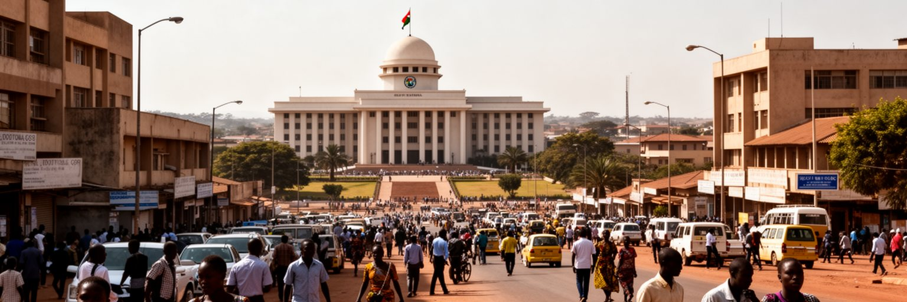
ドドマの政治性は、国会が置かれていることだけでは説明できません。会期中には議員、官僚、政党関係者、記者、支援者、ロビイスト、地方代表が集まり、ホテル、飲食店、交通、印刷、警備、通訳、イベント運営まで街の需要が変わります。タンザニアは人口が多く、地域差も大きい国です。湖岸、海岸、内陸農村、ザンジバル、鉱山地域、国境地域の課題を議会で扱う時、ドドマは全国の声を受ける舞台になります。行政機能の移転が進むほど、住民票、許認可、雇用、公共事業、教育、保健政策の実務も首都へ近づきます。一方で、ダルエスサラームの経済的な重み、各省庁の実務拠点、外交や企業活動との距離は残ります。二つの都市の役割分担は、タンザニアの都市体系を特徴づけます。ドドマの行政都市としての成熟は、広い政府地区の景観よりも、手続きが公平で分かりやすく、地方から来た人が時間と費用を過度に払わずに済むかに表れます。首都の信頼は窓口の実感から作られます。議会がある街では、政治の言葉が日常の商売にも入り込みます。会議が開かれる時期の宿泊費、車の流れ、警備、露店の売上は変わり、国家の予定表が住民の仕事にも影響します。政治都市を読む時は、演説や選挙だけでなく、行政が地方代表と住民の生活をどう結び直すかを見る必要があります。そこに首都の実力が出ます。
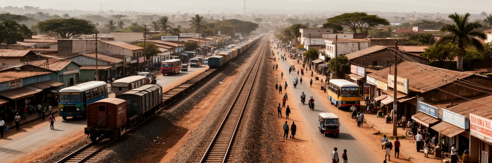
ドドマはタンザニア中央部の交通結節点として成長してきました。中央鉄道はダルエスサラーム方面と内陸を結び、幹線道路はモロゴロ、シンギダ、アルーシャ、イリンガ、ムベヤ方面への移動を支えます。首都移転の候補地として重視されたのも、既存の町と交通路を利用できることでした。鉄道駅、バスターミナル、道路沿いの商店、燃料、修理、宿泊、食堂は、政治首都の裏側で物流と人の移動を毎日支えています。農産物、建材、公務員、学生、商人、家族を訪ねる人が行き交い、ドドマは通過点であると同時に滞在地にもなります。新しい道路や空港計画は都市の可能性を広げますが、中心部の歩行者、自転車、ダラダラ、郊外通勤をどう扱うかも重要です。幹線交通が発達しても、市内の乗り換えが不便なら首都の機能は限られます。ドドマの世界性は巨大な国際空港よりも、広い国土を日々結ぶ実務的な回廊にあります。移動のしやすさは、政治、教育、医療、市場を全国へ開く条件です。鉄道や道路の改善は首都だけでなく、内陸農村の作物価格、学生の帰省、病院への紹介、建材の供給にも効きます。交通回廊を読むと、ドドマが地図の中心に置かれた理由が生活の単位で見えてきます。駅前やバス乗り場の案内、歩道、日陰が整えば、長距離移動の負担も市内で少し軽くなります。移動の質は都市の印象を決めます。
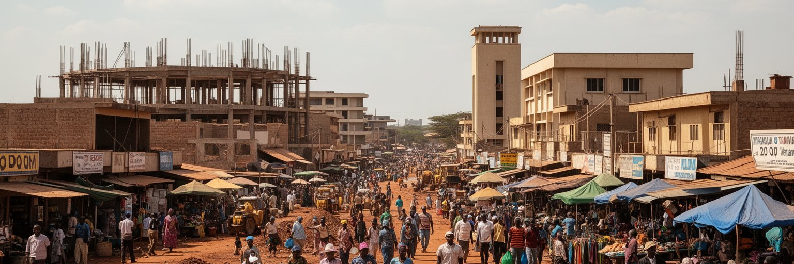
ドドマの経済は、政府機能の移転によって大きく動いています。省庁、国会、職員住宅、道路、学校、ホテル、会議施設、商業施設の整備は、建設、警備、清掃、運転、飲食、小売、不動産、金融、通信の仕事を増やします。大学や専門学校は若い消費と知識労働を生み、市場は周辺農村から来る穀物、豆、野菜、家畜、日用品を扱います。近郊の葡萄栽培とワイン産業は、乾燥した高原の土地利用を都市の個性に変える要素です。ただし、首都化による成長は誰にでも同じ利益を配るわけではありません。土地を持つ人、建設契約に近い企業、安定した公務員と、非公式商売や日雇いに頼る人の差は広がりやすいです。若者は行政職への期待を持つ一方、十分な求人がなければ小売、バイクタクシー、建設、農業、移住を組み合わせて暮らします。昼の市場では米、豆、焼き肉、携帯用品が並び、夜の小店や食堂は学生と職員の帰宅時間に合わせて明かりをつけます。市場の価格はラジオやSNSでも共有され、給料日や雨の有無で客足も変わります。公共工事が終わった後にも仕事が残るか、地元の小さな店が新しい需要を取り込めるかは重要です。首都経済が一時的な建設景気に偏れば、成長の実感は短くなります。職業訓練、調達の透明性、小規模事業者への信用がそろえば、移転の利益はより広く街に残ります。日々の賃金と商売の安定が、首都化を住民の実感へ変えます。
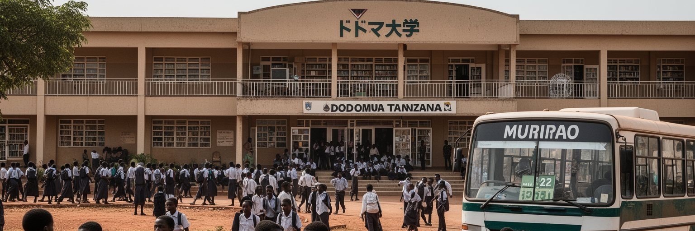
ドドマは大学都市としても重要です。ドドマ大学をはじめ、教育機関、研究施設、学生向け住宅、食堂、コピー店、通信サービス、交通が集まり、若い世代が首都の日常を活気づけます。学生は全国各地から来るため、ドドマはスワヒリ語を共通語にしながら、多様な地域語、宗教、食習慣、家族背景が出会う場所になります。大学は単に人を集めるだけでなく、教員養成、医療、公共政策、情報技術、社会科学、地域開発の知識を通じて、内陸首都の役割を厚くします。学生にとっては学費、家賃、食費、交通費、インターネット環境、アルバイトの少なさが現実的な焦点です。卒業後に首都で働けるか、ダルエスサラームへ移るか、地方へ戻るか、海外をめざすかは、タンザニアの若者の進路を映します。キャンパスの周りではサッカー観戦、SNSの告知、夜の音楽、安い食堂、コピー店、下宿、バイクタクシー、通信店が学びの外側を支えます。試験前のコピー店の列、食堂の豆料理、夜に聞こえる音楽は学生都市らしい感覚です。奨学金や家族からの送金も生活を支えます。大学が地域と結びつけば、乾燥地農業、水管理、公共交通、保健、都市計画に実践的な知が生まれます。若い声が行政や地域活動へ届くほど、首都は制度の場所から参加の場所へ近づきます。学生の移動と交流は、全国の地域差を互いに知る機会にもなります。
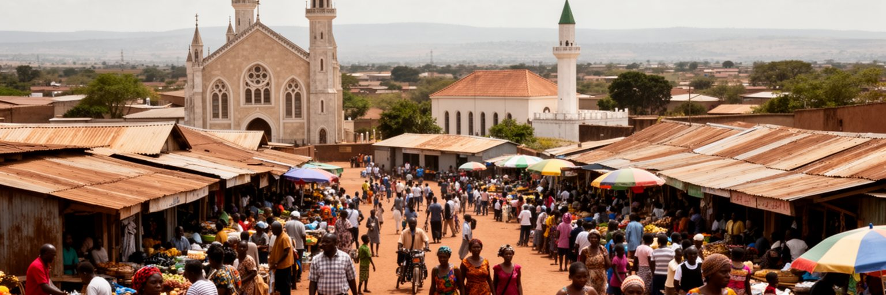
ドドマはゴゴ人の土地としての地域性を持ちながら、首都機能によって全国から人を受け入れる都市です。スワヒリ語は行政、学校、市場の共通語ですが、家庭や地域の会話にはゴゴ語をはじめとする多様な言葉が残ります。キリスト教の教会、イスラムのモスク、伝統的な儀礼、家族行事、市場の食、音楽、結婚式、葬儀が、日々の時間を形作ります。タンザニアの宗教生活は対立だけでなく、近所づきあい、学校、商売、祝祭の中で調整されてきました。首都化によって公務員、学生、建設労働者、商人が増えると、土地の記憶と新しい都市文化が混ざります。夕方にはラジオのニュース、教会の歌、モスクの呼びかけ、市場の値段交渉、サッカーの歓声が近い距離で重なります。米やウガリ、焼き肉、豆料理の匂いも、家族行事や学生の食卓を結びます。乾燥地での農業、家畜、音楽、共同体の助け合いは、首都の近代的な建物の裏側で今も重要です。一方で、都市化は若者の価値観、女性の働き方、家族の距離、宗教施設の役割を変えます。ドドマの文化は、地方性を消して全国首都になるのではなく、地域の声を抱えたまま国家の中心になるところに特徴があります。日曜礼拝、金曜礼拝、結婚式の音楽、市場での値段交渉は、異なる出身地の人々が同じ都市で距離を測る場です。文化は飾りではなく、共に暮らすための作法として街を支えています。
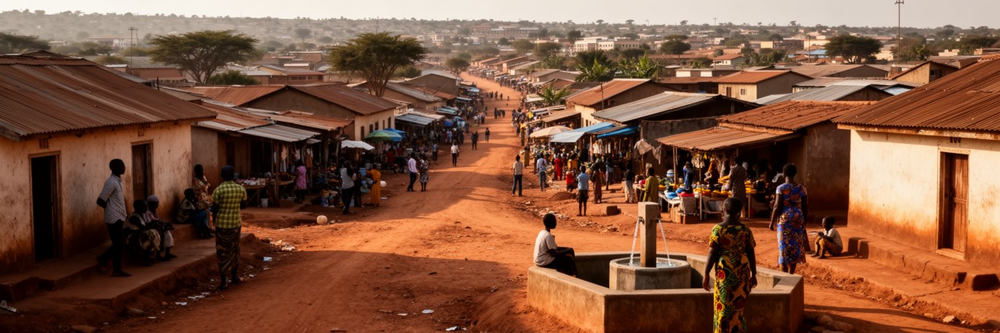
ドドマの日常は、首都の看板の下で、水、住まい、交通、学校、市場、医療、暑さと向き合う生活です。政府機能の移転と人口増加は住宅地を外側へ押し広げ、土地価格、賃貸住宅、職員住宅、学生向け住居、低所得世帯の住まいに影響します。舗装道路や給水管が整った地区もあれば、未舗装路、遠い停留所、共同水源、排水の不足に悩む地区もあります。乾季には水の確保と土ぼこりが問題になり、雨季には短い強雨が道路や排水を試します。市場では穀物、豆、野菜、肉、衣料、携帯用品が並び、焼き肉や揚げパンの匂い、店先のラジオ、子どもの声が買い物の時間を作ります。女性は販売、育児、水くみ、家事、教会やモスクの活動を重ねることが多く、その労働は統計に表れにくいです。首都化による建設ブームは便利さを増やしますが、近所の歩きやすさ、子どもの通学、高齢者の通院、安全な夜道を置き去りにすれば、暮らしの質は上がりません。新しい住宅地が広がるほど、保育、学校、診療所、排水、バス路線を後から追わせる負担が増えます。夕方の店先、井戸の待ち時間、夜の小さな屋台も住民の公共空間です。家の数だけを増やすのではなく、暮らしの時間を短くし、近所の安心を作ることが首都の基本になります。市場までの距離や水の待ち時間は、住民にとって都市計画の最も身近な評価です。
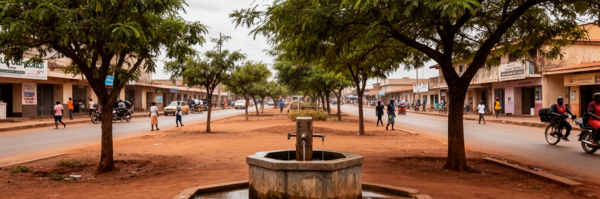
ドドマの都市計画では、水と乾燥気候を避けて通れません。中央高原の半乾燥地域では、雨季の降水が限られ、長い乾季には井戸、貯水、配水、節水、街路樹の管理が生活と都市成長を左右します。人口が増え、政府施設、大学、住宅、ホテル、工事現場が増えるほど、水需要も上がります。水は蛇口から出る便利な資源である前に、地下水、流域、配管、料金、管理能力、住民の信頼で成り立つ社会的なインフラです。気候変動によって雨の時期や強さが変われば、干ばつと急な浸水の両方に備える必要があります。乾いた土地では、舗装、屋根、排水、日陰、公園、都市農業の扱いが熱と水の問題につながります。貧しい地区ほど水の単価が高くなったり、遠くまで運んだりすることがあり、環境問題は家計と健康の問題にもなります。ドドマが首都として拡大するなら、成長の速度に水道、衛生、緑地、雨水管理を合わせる必要があります。乾燥した空と広い空間はこの都市の魅力ですが、その魅力を保つ条件は慎重な水管理です。水の公平さは、首都の公共性を測る分かりやすい尺度です。公共施設が水を安定して使える一方で、周辺住宅地が不便を抱えれば、首都への信頼は弱まります。井戸、配管、料金、節水教育を一体で考えることが、乾燥高原の成長を現実的にします。日陰を増やす小さな設計も、水を守る大きな制度と同じくらい日常に効きます。
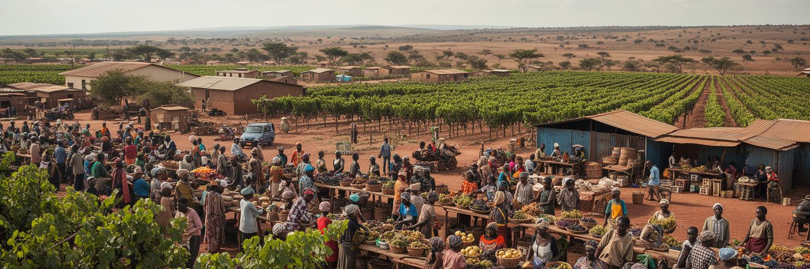
ドドマ周辺の葡萄栽培とワイン産業は、都市の個性を形作る大切な要素です。タンザニアでワインと聞くと意外に感じるかもしれませんが、中央高原の乾燥した気候は葡萄栽培に適した条件を持ち、地域の農家、加工施設、販売、観光、飲食を結びます。葡萄畑は首都の近くに農村の風景を残し、行政都市だけではないドドマの顔を見せます。農家にとっては価格、苗木、灌漑、病害、輸送、買い取り、加工技術が収入を左右します。都市の成長で土地需要が高まると、農地と住宅地、道路、公共施設の競合も起きます。ワイン産業が地域に利益を残すには、単にブランドを売るだけでなく、小規模農家の交渉力、品質管理、観光導線、女性の雇用、若者の技能訓練を育てる必要があります。市場では穀物、豆、家畜、野菜も重要で、ドドマの食は周辺農村との日常的なつながりで支えられます。首都が広がるほど、農村を後景としてではなく、都市の生活基盤として扱う視点が大切です。葡萄畑を通じて見るドドマは、政治首都であると同時に、乾燥地の農業と都市消費が近くで交わる場所です。農村から来る作物は市場価格を通じて都市の家計に響き、都市から出る需要は農家の作付け判断にも影響します。首都と農村の距離が近いことは、食、雇用、景観を一緒に考える強みです。農業の物語を見れば、ドドマは官庁だけの街ではないと分かります。
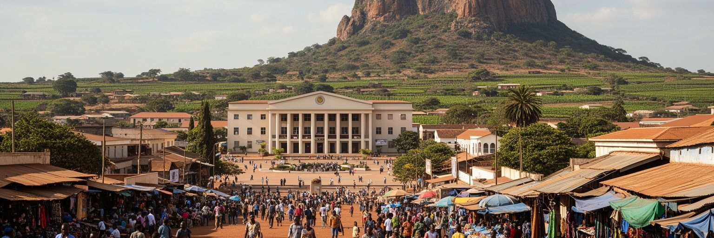
ドドマの観光は、海岸のリゾートやサファリの玄関口のような強い印象とは違います。旅人は国会周辺、ジャムフリ広場、教会やモスク、市場、大学、岩山、郊外の葡萄畑を歩きながら、タンザニアがなぜ内陸に首都を置こうとしたのかを考えることになります。街の見どころは大きな記念物だけでなく、広い道路、建設中の地区、学生の移動、政府職員の住宅、市場の値段、乾いた風、雨季を待つ土地にもあります。短時間の訪問では地味に見えるかもしれませんが、ドドマは国家の理想と実務の距離を観察できる都市です。ダルエスサラームの港湾経済、アルーシャの国際会議と観光、ザンジバルの海洋文化と並べて見ると、ドドマの役割ははっきりします。首都は国の顔であると同時に、まだ作られている途中の制度でもあります。旅行者が市場で食事をし、鉄道やバスの動線を見て、葡萄畑や岩山へ足を伸ばすと、政治だけではない内陸高原の生活が見えます。ドドマを読むことは、派手な名所を探すより、国土の中心で国家と日常がどう折り合うかを見る旅です。観光客がゆっくり滞在すれば、首都移転の計画、乾燥地の暮らし、学生の街、農村との近さが一つの物語になります。控えめな都市ほど、観察する視点が旅の深さを決めます。写真映えよりも、なぜここに首都があるのかを考える時間が、この街の記憶になります。